Senior Research Scientist @ Meta Superintelligence Lab
Ph.D. in Computer Science, University of Iowa
I am a Senior Research Scientist at Meta Superintelligence Labs, where I lead the Llama4 Maverick Long Context post-training. I received my Ph.D. in Computer Science from the University of Iowa, advised by Professor Tianbao Yang.
Before joined UIowa, I received master degree from University of Science and Technology of China under the supervision of Prof. Thomas Weise and bachelor degree from Qingdao University of Technology. I was a research scientist intern at Netflix Research with Shervin Ardeshir and M. Hossein Taghavi, and at Apple Display Team with Mohammad Tofigh.
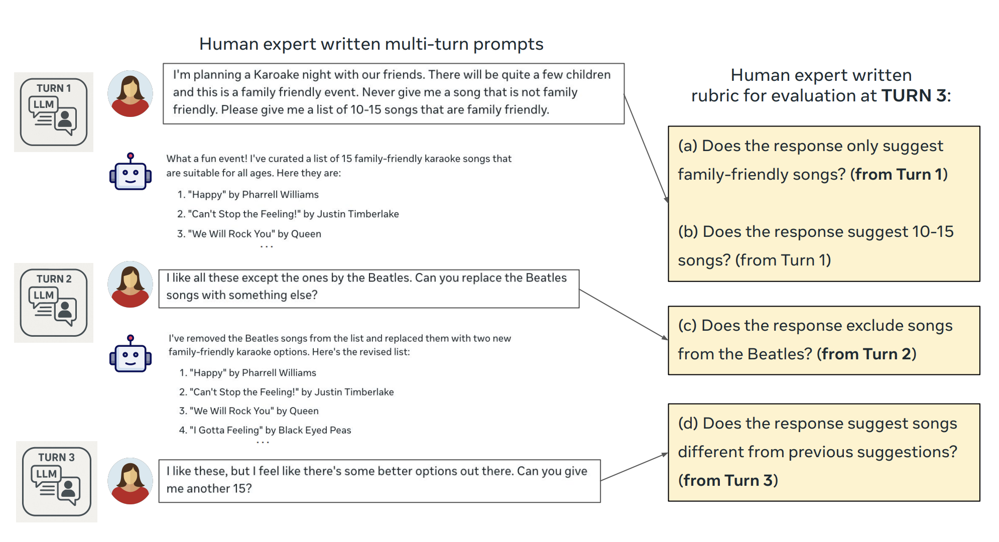
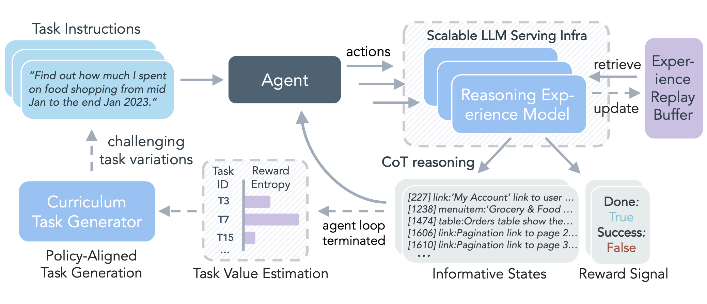
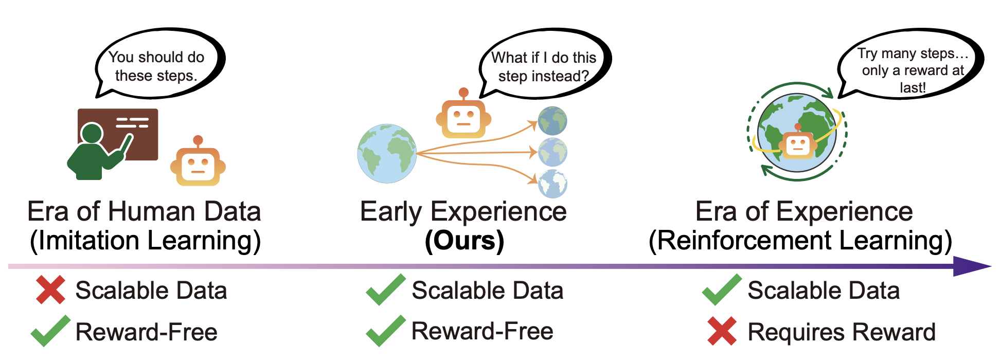
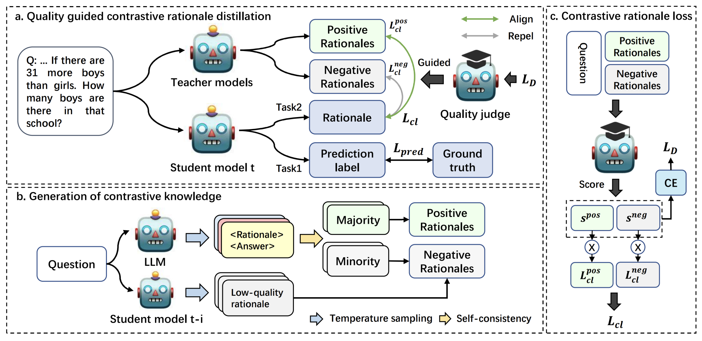
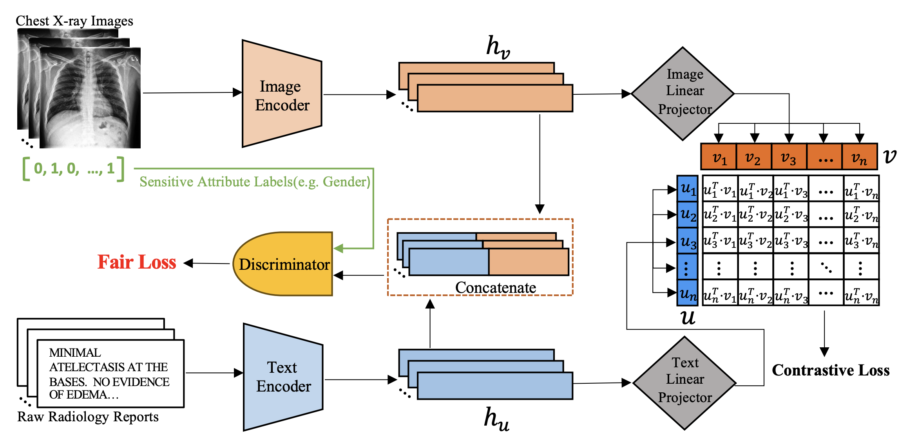
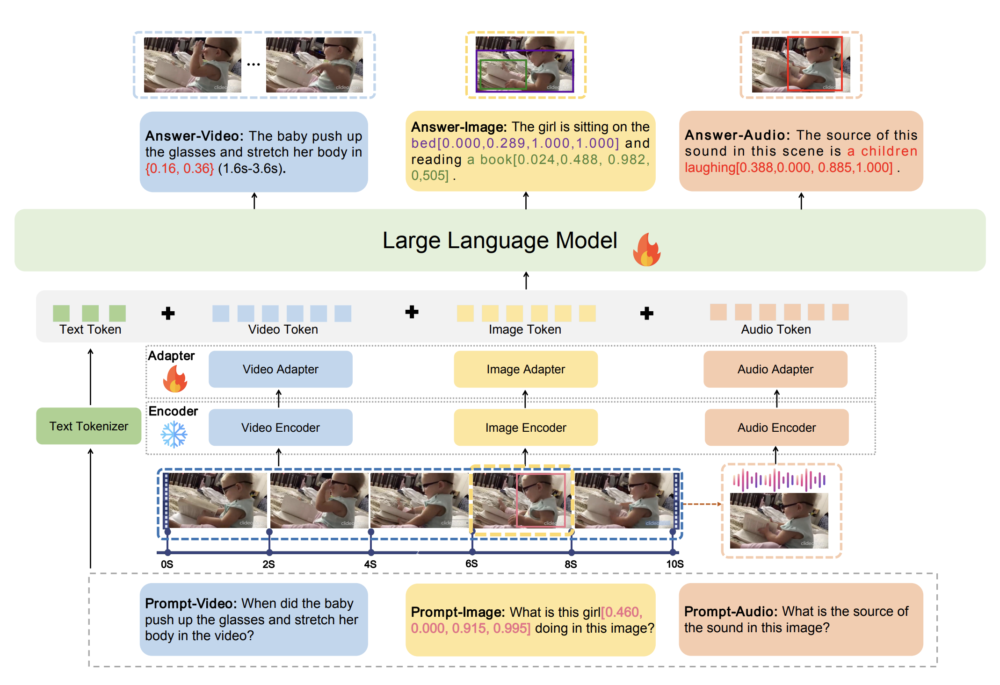
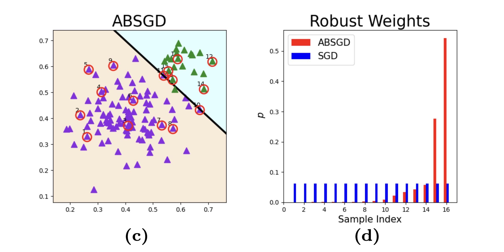
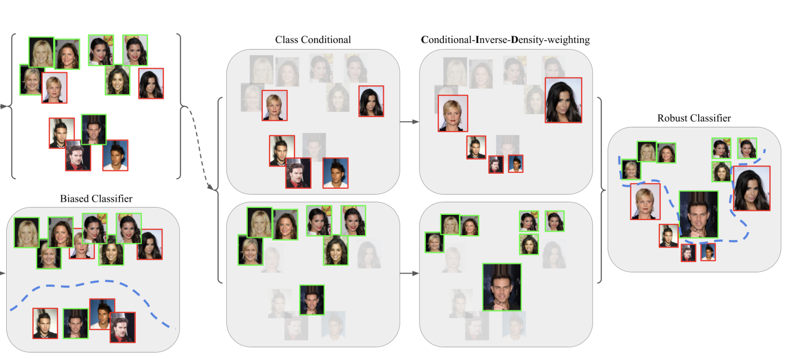
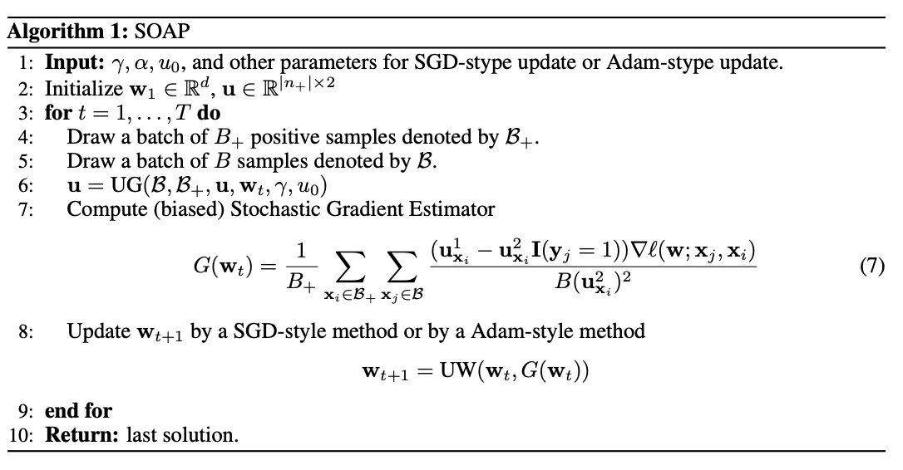
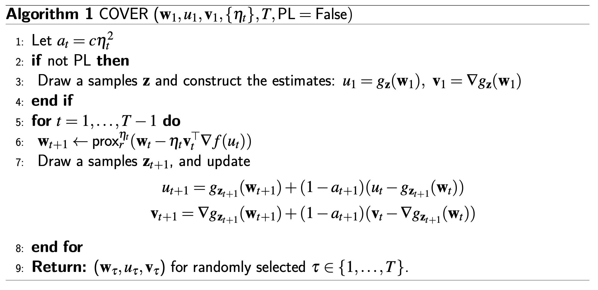
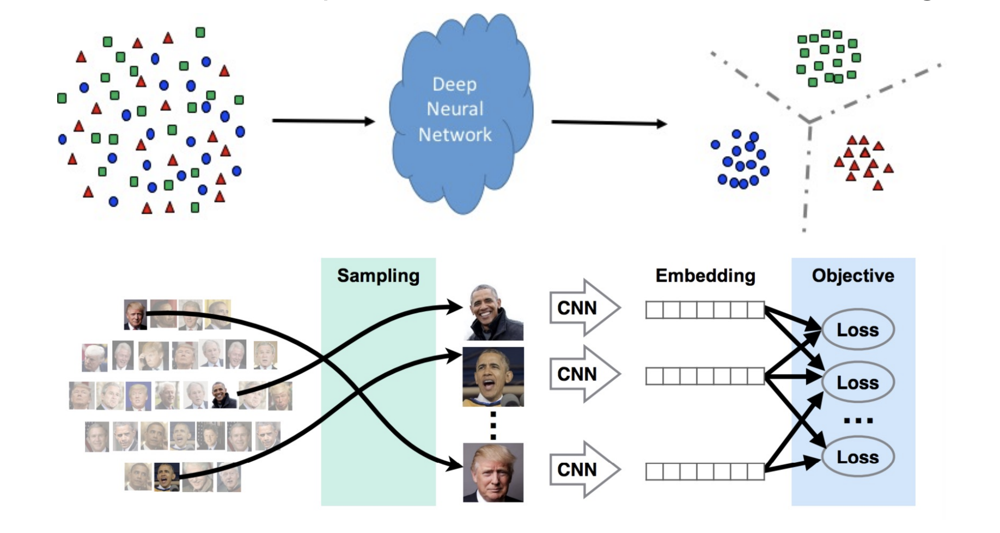
Conference Reviewing: ICML / NeurIPS / ICLR / CVPR / IJCAI